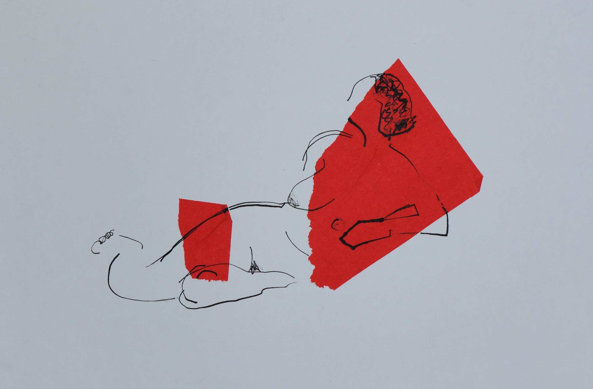

About
A Different Perspective

Works in
- Charcoal
- Inks
- Acrylic
- Oil
- Corten steel
- Foundry bronze
- Jesmonite
- Carbon fibre
- Mirrors
- Shadows
For Michael Joseph the purpose of art is not to create a photo-realistic image of life. His work is a translation into artistic values like a simple line, shape or space to such an extent that it becomes stimulating in its own right. The resulting simplicity intrigues, leaving a deeper and more lasting impression.
In this way Michael is able to explore and experiment on any subject. He particularly enjoys the figure and working from life. It provides a framework for developing thoughts and skills rather like a musician practising scales and arpeggios. He will take a nude and dress it again, not in clothes but in his own artistic language. Rather than accurately copying the figure, his approach adds mystery and interest so that it will command attention.
Michael will jump from one medium to another responding to the previous piece of work, reforming and editing as he goes. For example, from a charcoal drawing he might find a sculptural element. The three-dimensional piece might then suggest an idea in paint. As the method of working progresses, the image breaks further away from the representational and into abstraction.
His work conveys emotions or actions. The titles are often verbs or adjectives rather than nouns. He says that if a writer is able to use a range of grammar to present the reader with a perception then so too can an artist.
Michael is unrestricted in his use of medium. Works include charcoal, inks, paint, metal, carbon fibre, mirrors or shadows. Equally the tools he uses range from a simple brush to a computer-controlled milling machine. There are no limits when working creatively and the outcome is diverse and eclectic.
If a writer is able to use a range of grammar to present the reader with a perception, then so too can an artist.
Michael Joseph b. 1951
- 1951Born — an identical twin
- 1960sRunner-up, Vauxhall national car design competition
- Engineering apprentice, Rolls-Royce Aero Engines, Derby
- 1971Joins British Airways as a trainee pilot at Hamble; takes up oil painting
- 1987Aviation Painting of the Year, Guild of Aviation Artists
- Full Member and Chairman, Guild of Aviation Artists
- 2017The Creative Figure — solo show, Oxmarket Gallery, Chichester
- 2017Winner, Stride Open Drawing Award
Paintings acquired by
British Aerospace, Fokker, RAF Museum Hendon, British Caledonian Airways, Aer Lingus
Born an identical twin, Michael Joseph has always been spatially aware. From an early age he was competent at drawing and using his hands to make things from all sorts of materials. At school in the 1960s he was runner-up in a national car design competition with Vauxhall — his entry was a hatchback before they had been invented. He became an engineering apprentice at Rolls-Royce Aero Engines in Derby, where his original and creative thinking led to him winning a competition, the prize for which was a Private Pilot's Licence. Learning to fly was a skill he found easy to master with his ability to judge the three-dimensional concepts of speed, height and vectors.
In 1971 he joined British Airways as a trainee airline pilot at Hamble. It was as a distraction from the intensive training that he first took up oil painting. This soon led to exhibitions in London with the Guild of Aviation Artists, where he won several awards including the Aviation Painting of the Year Award in 1987. He was elected a Full Member and was Chairman for two years. His paintings were bought by British Aerospace, Fokker, the RAF Museum at Hendon, British Caledonian Airways and Aer Lingus. He also took pleasure in painting and exhibiting locally in Sussex, where he could broaden his subjects and artistic ideas.
Today he enjoys the creative process by switching between drawing, painting and sculpture, responding and editing from one work to the next. In 2017 he held a successful one-man show at the Oxmarket Gallery in Chichester and later in the year won the Stride Open Drawing Award.
Work is available for sale. Please get in touch for prices, commissions or studio visits.